Hovslund (Øster Løgum)
Geschichteter, feinkörniger, leicht rötlicher Granit
Höhe über der Erde: 173 cm
Größte Breite: 136 cm
Größte Dicke: 59 cm
Runenhöhe ca.: 17 cm
Runeninschrift :
Hærulf
6 - Hovslund (oder Øster Løgum, bzw. Haverslund Stein) - Letztes Update 14.05.2025
Listennummer : DR 15 / DK SJy 62
Navidaten: 55.1400698 9.3450649 oder: Oksevejen, 6230 Rødekro
Transliteration: hairulfR :
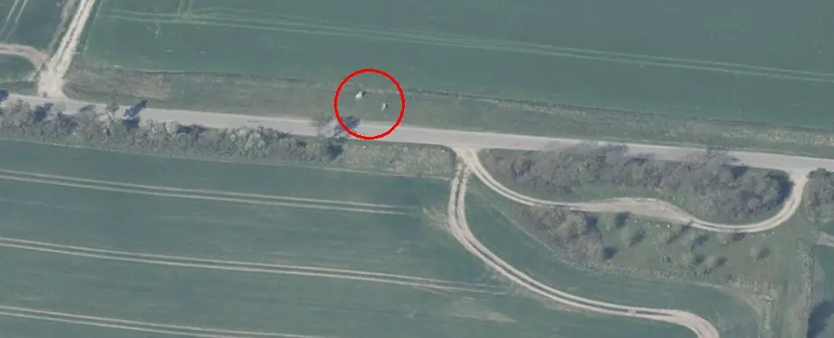
Dies ist ein Luftfoto vom 21.04.2023 von Skråfoto - Lizenz: CC BY 4.0 - das den Runenstein mit seinen zwei Infotafeln zu seiner Rechten an seinem historischen Standort zeigt. Skråfoto ist eine Webanwendung, die von Klimadatastyrelsen weltweit kostenlos bereitgestellt wird. Die Aufnahmen werden seit 2017 alle zwei Jahre erneuert - 2017 / 2019 / 2021 / 2023 - und neben einer Senkrechtaufnahme wird ein Schrägbild aus jeder Himmelsrichtung angeboten, das man über eine Adresssuche aufrufen kann. In 2025 kommen ja schon wieder neue Luftfotos dazu.
Der Hovslund Stein, der auch Øster Løgum Stein genannt wird, ist einer der ersten Runensteine, der in der Literatur erwähnt wird. Der zuerst bekannt gewordene Standort (1592) war sicher auch der ursprüngliche. Dieser befindet sich auf einem Feld bei Hovslund , unmittelbar westlich des Ochsenweges zwischen Hovslund und Immervad. Dort steht er auch heute wieder, an der Straße, die von Hovslund Stationsby in Richtung Norden nach Skovby führt.
Dazu
Hinweisschild
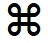
Die Runeninschrift besteht nur aus einem einzigen Wort und wird von unten nach oben gelesen. Die Inschrift wird von den Runologen auf 800-900 n. Chr. in die frühe Wikingerzeit datiert.

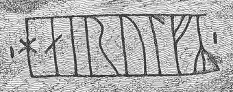
Die Inschrift hier von mir jeweils einmal nach rechts gedreht.
Die erste Erwähnung dieses Runensteins stammt laut Lis Jacobsen/Erik Moltke - Danmarks Runeindskrifter - 1942, Text, Nr. 15, Sp. 39 - schon von 1592 in dem Buch "Hypotyposis Arcium, Palatiorum, Librorum, Pyramidum, Obeliscorum, Cipporum, Molarum, Fontium, Monumentorum & Epitaphiorum, ab ... Henrico Ranzovio, Prorege & Equite Holsato, conditorum ..." von Peter Lindeberg (*16.03.1562 - 16.07.1596, Jurist, Reisender, Kaufmann) auf der Seite 123 "...in loco dicto Ammerwat..." (5. Zeile von unten).
Zwei Seiten davor findet sich in dem Buch eine Wiedergabe des weltberühmten Rantzau Prospektes der Jelling Monumente von 1591.
Der nächste zeitliche Bericht stammt von 1597 von Henrik Rantzau (*11.03.1526 - 31.12.1598, Statthalter des dänischen Königs für die königlichen Anteile an den Herzogtümern Schleswig und Holstein)
 Bildquelle:
Wikimedia - Lizenz:
Public Domain
Bildquelle:
Wikimedia - Lizenz:
Public Domain
auf der
Seite 63 (linke Spalte, etwa mittig) in seiner Abhandlung "Cimbricae
Chersonesi descriptio", die 1739
im Band 1 des 4-bändigen Werkes "Monumenta
inedita rerum Germanicarum, praecipue Cimbricarum et Megapolensium"
-
 Bildquelle:
Wikipedia - Lizenz:
Public Domain
Bildquelle:
Wikipedia - Lizenz:
Public Domain
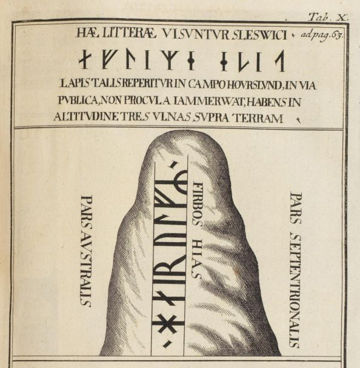
Wenige Seiten danach findet sich in dem Buch auch eine Wiedergabe des weltberühmten Rantzau Prospektes der Jelling Monumente von 1591 - diesmal allerdings eine Kopie, ausgeführt von Johann Benjamin Brühl (*1691 - 12.05.1763, Deutscher Kupferstecher) aus dem Jahre 1710.
Ole Worm (*13.05.1588 - 31.08.1654, Arzt, Universalgelehrter und der Begründer der Runologie)
 Bildquelle:
Digitale Sammlung der Königlichen Bibliothek Kopenhagen -
Lizenz:
Public Domain
Bildquelle:
Digitale Sammlung der Königlichen Bibliothek Kopenhagen -
Lizenz:
Public Domain
hat um das Jahr 1623 den handschriftlichen Originalentwurf zu seinem bahnbrechenden Werk von 1643, seiner "Danicorum Monumentorum Libri Sex, Hafniae, 1643" zu Papier gebracht. Dieses Werk wird heute in der Königlichen Bibliothek in Kopenhagen - GKS 2370 kvart - verwahrt. Bei meinem Besuch in der Königlichen Bibliothek am 26.09.2022 durfte ich diese Arbeit in Händen halten und fotografieren. Auf der heute mit S. 106 markierten Doppelseite hat er seinen Eintrag zu diesem Runenstein auf der linken Seite vorgenommen.
Von der Handschrift habe ich zu "Haverslevense" diese vier Seiten abfotografiert.
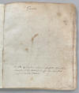 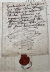 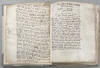 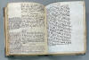
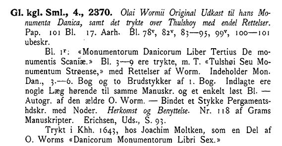
Diese o.a. Beschreibung der Handschrift findet sich bei Emil Leopold Gigas (*23.08.1849 - 08.09.1931, Bibliothekar, Literaturhistoriker) in der Arbeit "Katalog over Det store kongelige Bibliotheks Haandskrifter. Første Bind (1903)", S. 14. Gigas verweist darin auch auf Jon Erichsen (*31.08.1728 - 29.03.1787, isländischer Bibliothekar und Verfasser)
 Bildquelle:
Wikipedia - Lizenz:
Public Domain
Bildquelle:
Wikipedia - Lizenz:
Public Domain
der diese Handschrift in seiner früheren Auflistung "Udsigt over den gamle Manuscript-Samling i det store Kongelige Bibliothek" von 1786 auf der S. 93 unter der Nummer 2 aufgelistet hatte. Er war seit 1781 als Bibliothekar bei der Königlichen Bibliothek in Kopenhagen angestellt und hat die damals noch völlig ungeordnete Sammlung erstmals grundlegend katalogisiert - Titelblatt. Eine deutschsprachige Rezension zu diesem Werk findet sich in der Allgemeine Literatur- Zeitung - März 1788. Außerdem führt Gigas den Namen Hans Gram (*28.10.1685 - 19.02.1748, Philologe und Historiker)
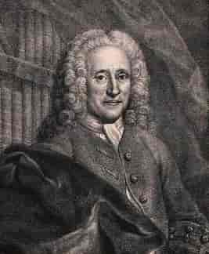
Bildquelle: Digitale Sammlung der Königlichen Bibliothek Kopenhagen - Lizenz: Public Domainan. Er war von 1730-48 Leiter der Königlichen Bibliothek. Er gilt als der erste moderne Historiker Dänemarks. Diese Handschrift befand sich vormals mit der Nummer 118 in seiner Sammlung (Umfasste ca. 24.000 Bücher und ca. 300 Handschriften) und wurde 1750 in den Bestand der Königlichen Bibliothek in Kopenhagen aufgenommen. Seine Bücher wurden nach seinem Tod nämlich auf zwei Auktionen versteigert und gingen größtenteils ins Ausland. Die Handschriften hingegen erwarb die Königlichen Bibliothek in Kopenhagen damals komplett.
Skizze von Jon Skonvig (*1600 - 1664, Pfarrer und der Runenzeichner für Ole Worm) von 1629
Text: "Denne steen findiss Vdi Holsteen i Harsleu Huss leen ved Immervad En graa Kamp 3½ all hoÿ 2 all bred. oc staar vd ved Veien".
Übersetzung: "Dieser Stein befindet sich im Bezirk Holstein bei Hovslund das liegt in der Nähe von Immervad. Ein grauer Felsbrocken, 3½ Ellen hoch und 2 Ellen breit und steht an der Straße." - Anmerkung: 1 Elle = 62,77 cm
Die Zeichnung misst im Original 12,7 cm.
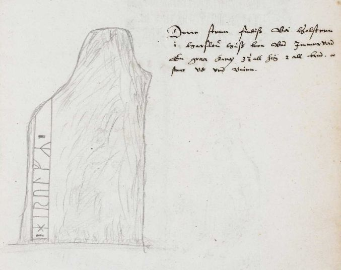
Die Aufzeichnungen - sechs Handschriften - von Jon Skonvig haben sich in der sogenannten "Arnamagnæanske samling, AM 366-371 fol." (zu deutsch: Arnamagnäanische Sammlung) erhalten.
Die entsprechende originale Seite 17r der A.M. 367 fol - siehe oben - die diese Runensteinzeichnung und die dazu von Jon Skonvig angefertigten Aufzeichnungen wiedergibt kann über die Webseite "www.handrit.is" als Digitalisat eingesehen werden.

Am Mittwoch, 28.09.2022, war ich in der Universität Kopenhagen in der Arnamagnæanske Samling und durfte das Original - AM 367 fol. - in Händen halten und eingehend fotografieren. Man bat mich aber von einer Veröffentlichung meiner Fotos abzusehen und stattdessen auf die digitalisierte Handschrift über www.handrit.is zu verweisen.
In der Königlichen Bibliothek zu Kopenhagen - Digitale Sammlung - haben sich aus dem Jahr 1641 zwei Landkarten von Johannes Mejer (*1606 in Husum; 1674, Mathematiker und Kartograf)
 Bildquelle:
Wikipedia - Lizenz:
Public Domain
Bildquelle:
Wikipedia - Lizenz:
Public Domain
erhalten, die die Landschaft um Hovslund zeigen (Darauf als Haberschlund, bzw. Haberschlundt bezeichnet). Darin ist der Standort des Runensteins jeweils eingezeichnet:
Kort over Aabenraa Amt Geometrische delineatio des Carspels Lugum, mit seinen 7. Dörffern - darin der Eintrag "Ronstein"

Kort over Aabenraa Amt Die 3. SpecialCharte des Dorffs Haberschlvnd
- darin der Eintrag "Rhonstein drauff diese Buchstaben gehaue"
und darunter noch die Wiedergabe der Inschrift mit Runenzeichen
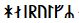

Ole Worm (*13.05.1588 - 31.08.1654, Arzt, Universalgelehrter und der Begründer der Runologie)
Bildquelle:
Digitale Sammlung der Königlichen Bibliothek Kopenhagen -
Lizenz:
Public Domain
nutzte die Vorlage von Jon Skonvig für einen Metallschnitt auf der S. 342 in seinem berühmten Werk "Danicorum Monumentorum Libri Sex, Hafniae, 1643" - Lizenz: Public Domain
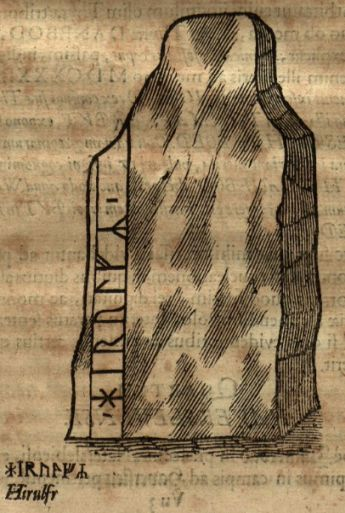
Dieser Screenshot findet sich in einer digitalisierten Ausgabe im Internet über die Bayerische Staatsbibliothek / MDZ Münchener DigitalisierungsZentrum Digitale Bibliothek - urn:nbn:de:bvb:12-bsb10800415-0 - abgerufen 24.11.2022
Er hat aber in der Inschrift einen Fehler, bzw. die 2. Rune von unten wurde von ihm ausgelassen.
Im Jahre 1652 erschien in Husum dann "Newe Landesbeschreibung Der Zwey Hertzogthümer Schleswich und Holstein" von Caspar Danckwerth und Johannes Mejer. Ein mächtiger Foliant mit über 300 Seiten und 41 Karten. Darin findet sich auf der S. 74 dieser Eintrag (rechte Spalte, 3. Absatz von oben):
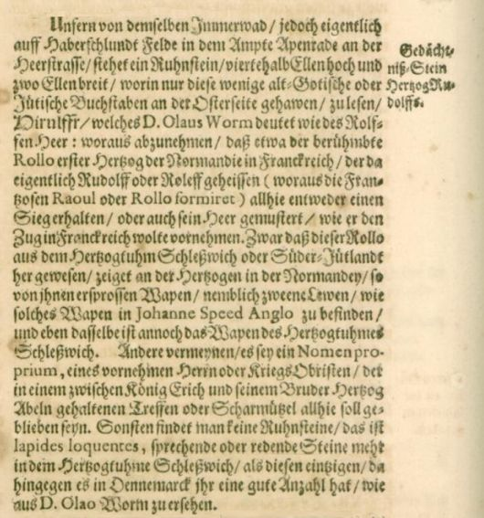
Die nächste Erwähnung findet sich im Mai des Jahres 1668 im "Reisebog paa hans Reiser i Holland, de spanske Nederlande, Frankrige, Tydskland, Sverrig, Norge, imellem 1659 og 1673" von Corfitz Braem (*07.07.1639 - 09.08.1683, Bürgermeister von Helsingborg).
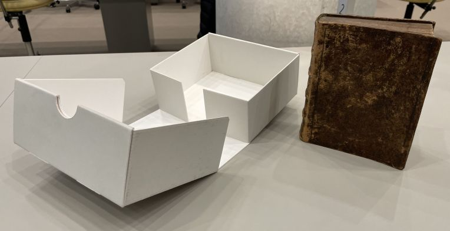
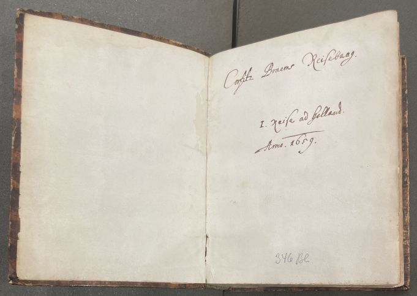
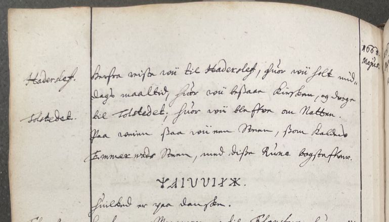
Diese Handschrift hat sich in Kopenhagen in der "Königlichen Bibliothek - Den sorte Diamant" als Thott 1926 kvart erhalten. Diese Aufnahmen von diesem Werk habe ich am Dienstag, 27.09.2022, angefertigt.
Beim Ableben des dänischen Reichsrats und Graf Otto Thott (*13.10.1703 - 10.09.1785, dänischen Reichsrat),
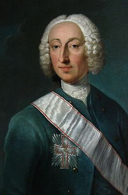
Bildquelle: Wikipedia - Lizenz: Public Domainder auf seinem Schloss Gavnø bei Næstved und in seinem Haus in Kopenhagen, dem Palais Thott die größte Privatbibliothek Dänemarks mit etwa 140.000 Bänden, darunter 6.000 Inkunabeln unterhielt, kamen die von ihm gesammelten 4.000 Handschriften, darunter auch dieses Werk und die älteren Druckwerke seines Nachlasses aus der Zeit bis um 1530 in den Bestand der Königlichen Bibliothek.
In der umfangreichen Hinterlassenschaft von Prof. P. G. Thorsen (*07.08.1811 - 06.05.1883, Bibliothekar, Runenforscher und Historiker - link-LIVES)
 Bildquelle: Fotografie
zw. 1863-1900
von
Fotograf Budtz Müller (*26.12.1837 -
30.12.1884) -
Det Kgl. Biblioteks billedsamling - Lizenz:
Public Domain
Bildquelle: Fotografie
zw. 1863-1900
von
Fotograf Budtz Müller (*26.12.1837 -
30.12.1884) -
Det Kgl. Biblioteks billedsamling - Lizenz:
Public Domain
ebenfalls in Kopenhagen in der Königlichen Bibliothek unter NKS 3296 kvart erhalten, findet sich in der Schachtel 8 diese handschriftliche Notiz, die Bezug nimmt auf das o.a. Reisebuch.
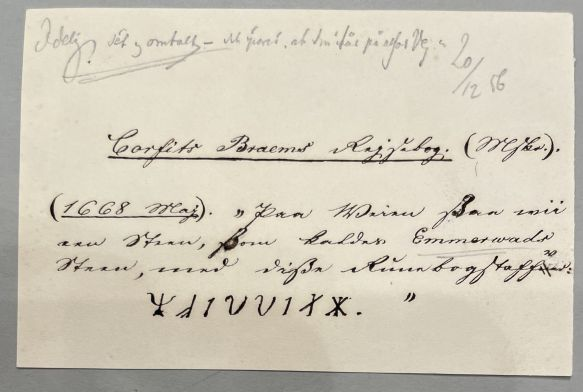
Peder Hansen Resen (*17.06.1625 - 01.06.1688, Jurist und Historiker)
 Bildquelle:
Wikipedia - Lizenz:
Public Domain
Bildquelle:
Wikipedia - Lizenz:
Public Domain
Er hat mit dem von ihm über 20 Jahre gesammelten Material das großartige Werk "Atlas Danicus", bestehend aus letztlich 39 Folianten, geschaffen. Nur geringe Teile wurden aber schon zu seiner Lebzeit gedruckt. Die Folianten wurden wenige Jahre nach seinem Tod 1692 an die Königliche Bibliothek Kopenhagen übergeben. Aufbewahrt wurden sie auf dem Dachboden der Trinitatis Kirche. Dort wurden sie fleißig studiert, abgeschrieben und zeitweise ausgeliehen. Leider wurde dann ein Großteil davon beim Kopenhagener Großbrand 1728 zerstört. Es hat sich neben einigen Originalseiten - siehe Arnamagnäanische Sammlung - AM 359 fol. / AM 360 fol. / AM 361 fol. und AM 362 fol. (digitalisiert) - nur eine (verkürzte) Abschrift und außerdem Kupferstiche von etwa 200 Städteansichten aus der Vogelperspektive erhalten. Originale dieser AM 359/360/361 fol sind über die Universität Kopenhagen - Institut for Nordiske Studier og Sprogvidenskab (NorS) - AM 359 fol / AM 360 fol / AM 360 fol (Karten) / AM 361 fol - in sw abrufbar. Eine zweite (verkürzte) Ausgabe war von Vincent Lerche (*04.04.1666 - 28.07.1742, Jurist, Architekt) beauftragt worden, diese wurde aber beim Brand von Schloss Christiansborg im Jahr 1794 vernichtet.
In der Königlichen Bibliothek in Kopenhagen wird seit 1803 in der Sammlung Uldall (186 folio) diese einzige verbliebene Ausgabe, die in den 1750er Jahren durch den Hofbaumeister Laurids de Thurah (*04.03.1706 - 06.09.1759)
 Bildquelle:
Wikimedia - Lizenz:
Public Domain
Bildquelle:
Wikimedia - Lizenz:
Public Domain
aus verstreuten Resten des Atlas Danicus in 7 Bänden rekonstruiert worden war, aufbewahrt:
Wie diesem Titel zu entnehmen ist, gehörte dieses Exemplar vormals Adam Gottlob Graf von Moltke (*10.11.1710 - 25.09.1792, Staatsmann, Diplomat).
 Bildquelle:
Wikimedia - Lizenz:
Public Domain
Bildquelle:
Wikimedia - Lizenz:
Public Domain
Nach dessen Tod erwarb Herman Treschow (*11.12.1739 - 02.05.1797, Professor für Theologie, Pfarrer) diese Ausgabe. Peter Uldall (*29.06.1743 - 11.11.1798, Jurist, Theologe)
 Bildquelle:
Wikimedia - Lizenz:
Public Domain
Bildquelle:
Wikimedia - Lizenz:
Public Domain
wiederum kaufte sie für 170 Rigsdaler (Rigsdaler zu 24 Skilling - damals 1 ½ Mark) nach dessen Ableben. Er hatte aber nicht lange Freude daran, denn er starb ein Jahr später an einem Schlaganfall. Sein Sohn, Justizrat W. A. Uldall, schenkte diese Ausgabe der Kgl. Bibliothek im Jahr 1803, wo dieses großartige Werk noch heute verwahrt wird (Ein Band hat übrigens die Größe H/B/D von 40 cm x 29,5 cm x 9,5 cm).
Im Atlas VI. ist auf den Seiten 737 und 738 ein kurzer Eintrag mit Zeichnung vom Runenstein enthalten, den ich am 28.09.2022 vor Ort fotografieren durfte.


Dort heißt es dann übersetzt: "In der Harde Gram, in der Gemeinde Vedsted, gibt es ein Gasthaus auf dem Feld namens Immervad, wo der Herzog von Holstein im Jahr 1420, als er eine Abteilung dänischer Reiter verfolgte, ihnen eine große Niederlage beibrachte und auch den Anführer Anton Rønnev selbst tötete. In der Nähe desselben Gasthauses kann man an der Straße einen Stein sehen, der dreieinhalb Ellen lang und zwei Ellen breit ist und auf dem in Runenschrift diese Buchstaben geschrieben sind: HILRULFR, wie auch das folgende Bild zeigt:
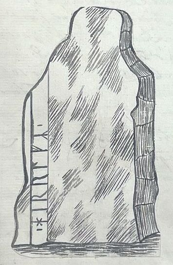
Aber wer ist dieser Hirulf, ob es der Rolf (Rollo) ist, der - S. 738 - mit einer Armee von Jütland nach Frankreich übersiedelte und Herzog der Normandie wurde, und der sich hier an der Stelle vielleicht eine Schlacht geliefert hat, oder ob es sich um einen anderen des namens handelte weiß man nicht."
Aus dem Lateinischen ins Dänische übersetzt in "Atlas Danicus VI D Ribe Stift, udgivet af Susannen Lykke Nielsen, 1987", worüber ich hier eine Übersetzung ins Deutsche vorgenommen habe.
Peder Pedersen Syv (*22.02.1631 - 18.02.1702, dänischer Linguist und Sammler von Volkserinnerungen)
 Bildquelle:
Wikimedia - Lizenz:
Public Domain
Bildquelle:
Wikimedia - Lizenz:
Public Domain
hat auch eine Notiz zu dem Hovslund Runenstein angefertigt. Heutzutage in der Handschriftensammlung Rostgaard 21 (bewahrt in der "Königlichen Bibliothek" - Den sorte Diamant) in Kopenhagen (Darin: 10 - Peder Syv: Optegnelser om Runemindesmærker og om Mønter. S. 341-371) verwahrt. Die vorgenannte Notiz, die zwischen 1685 und 1700 niedergeschrieben wurde, berichtet basierend auf einer älteren Handschrift, über die keine näheren Angaben gemacht werden, von einer Inschrift.
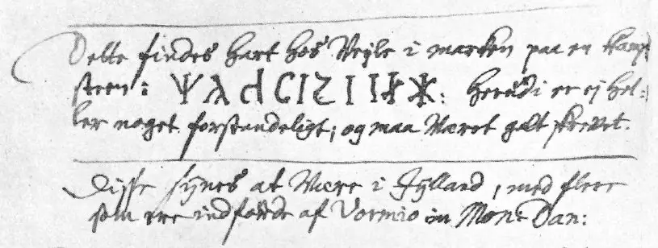
Quelle: Erik Moltke (*04.04.1901 - 19.10.1984, Runologe, Historiker), To runedokumenter, S. 206-207, in: Acta Philologica Scandinavica, Tidsskrift for nordisk sprogforskning, Niende Bind, 1934-35, S. 193-221
Dazu bringt Moltke dann auch diese Druckschrift Wiedergabe.
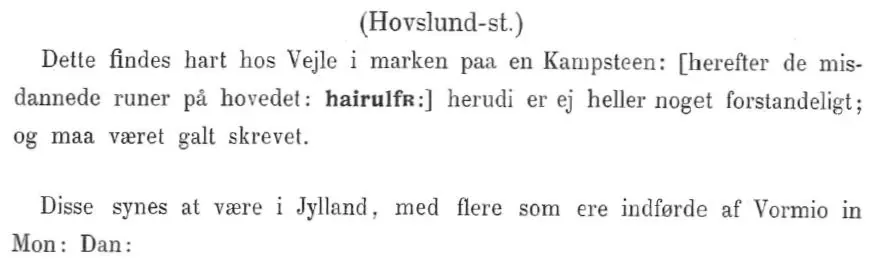
Übersetzung: Dort findet man dicht bei Vejle auf dem Feld einen schweren Felsbrocken: [danach die unförmigen Runen auf dem Kopf:
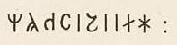
:] - ist aber unverständlich und muss wohl falsch geschrieben sein. Dies scheint in Jütland zu sein, wo mehrere von Ole Worm in Mon: Dan eingeführt wurden:In seiner Abhandlung "Om undersøgelsen og tolkningen af vore runemindesmærker" (Indbydelsesskrift til Kjøbenhavns Universitets aarsfest i anledning af Hans Majestaet kongens fødselsdag 8. April 1895) S. 43 ff., geht Prof. Ludv. F. A. Wimmer (*07.02.1839 - 29.04.1920, Philologe und Runenforscher - link-LIVES - Politiets registerblade - Bestattungsprotokoll)
 Bildquelle:
Fotografie zw. 1877-1900 von Fotograf Hansen & Weller
-
Det Kgl. Biblioteks billedsamling - Lizenz:
Public Domain
Bildquelle:
Fotografie zw. 1877-1900 von Fotograf Hansen & Weller
-
Det Kgl. Biblioteks billedsamling - Lizenz:
Public Domain
auf diese Handschrift ein. Er führt dort aus, dass die Inschrift auf den Kopf gestellt wiedergegeben wurde - anstatt - Der Name der Stadt Vejle beruhe auf einem Missverständnis erläutert er ebenfalls, denn Peder Pedersen Syv meinte das alte dänische Wort "Vejle" für Waatstelle/Furt.
Quelle: Ludv. F. A. Wimmer - "De danske runemindesmærker undersøgte og tolkede af Ludv. F. A. Wimmer, Andet Bind, Runestenene i Jylland og på øerne. 1899-1901, Teil B Sønderjylland, Nr. 1, S. 307-314".
Ein weiterer Bericht zu dem Runenstein stammt von Troels Arnkiel (Getauft 28.04.1638 - 07.09.1712, lutherischer Pastor und Altertumsforscher). In seinem im Jahr 1702 erschienen 4-bändigen Werk "M. Trogilli Arnkiels, Probsten und Pastoren zu Apenrade Jn dem Hertzogthumb Schleßwig-Hollstein/ Außführliche Eröffnung/ I. Was es mit der Cimbrischen und Mitternächtischen Völcker/ als Sachsen/ Gothen/ Wenden und Fresen ihrem Götzendienst/ Haynen/ Oraculen/ Zaubereyen/ Begräbnissen ... vor eine Bewandtniß gehabt/..." macht er zunächst im Theil 2, S. 60, Anmerkungen zu dem Runenstein:
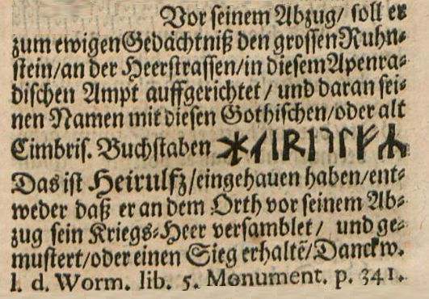
Im Theil 3 - Cimbrische Heyden Begräbnisse macht er auf der Seite 331-333 seine Ausführungen (Auf S. 331 ab § 4 rechts unten) zu dem Runenstein mit dieser (falschen) Wiedergabe der Inschrift:
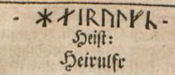
(Auf S. 332, linke Spalte, oben -
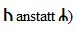

In der Handschrift "Beschreibung der von ihm gethanen Reise von Kiel aus nach Norden (sub finem Sec. XVIImi)" von Johann Daniel Major (*16.08.1634 - 23.08.1693, deutscher Universalgelehrter)
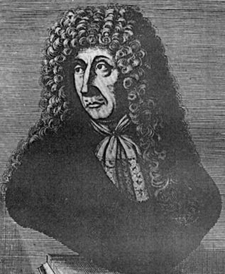
Bildquelle: Wikimedia - Lizenz: Public Domaindie sich in der Königlichen Bibliothek in Kopenhagen - NKS 365 folio - erhalten hat, befindet sich diese sehr dramatische Zeichnung des Runensteins in der Landschaft. Das Erscheinungsjahr ist nicht sicher, die Reise hat aber wohl 1693 stattgefunden, wie diesem Beitrag (rechte Spalte, obere drei Zeilen) aus dem Jahr 1751 aus dem Buch:
entnommen werden kann.
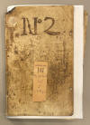 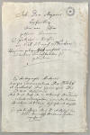 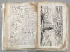 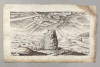
Diese Fotografien habe ich am Montag, 26.09.2022, in Königlichen Bibliothek in Kopenhagen - Den sorte Diamant - aufgenommen. Wie dem Titelblatt entnommen werden kann heißt es korrekt: "Joh. Dan. Majoris Beschreibung dero von Ihm gethanen kleinen Spatzier-Reise, von Kiel aus nach Norden. Worinnen gelegenheit vorfält ein und anderer Curiositäteten zu gedenken".
Erik Pontoppidan (der Jüngere, *03.09.1698 - 20.12.1764, dänischer Theologe, Prediger, Historiker und Autor)
 Bildquelle:
Wikipedia - Lizenz:
Public Domain
Bildquelle:
Wikipedia - Lizenz:
Public Domain
macht 1745 erstmals mit einem Aufsatz in dänischer Sprache - Det Danske Sprogs Skiæbne og forrige saavelsom nærværende Tilstand udi Sønder- Jylland eller Førstendømmet Slesvig - auf den Seiten 62 und 63 Ausführungen zu diesem Runenstein. Dieser Aufsatz findet sich in dem Buch "Skrifter, som udi det Kiøbenhavnske Selskab af Lærdoms og Videnskabers Elskere ere fremlagte og oplæste i Aarene 1743 og 1744, Første Deel".
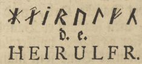
In dem Buch "Hamburgisches Magazin, oder, Gesammlete Schriften, aus der Naturforschung und den angenehmen Wissenschaften überhaupt" aus dem Jahr 1754 findet sich der identische Artikel ab der S. 464 ff. auch in deutscher Sprache wieder. Er schreibt dort:
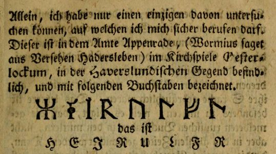
Darin hat er wohl jeweils die fehlerhafte Inschrift von Troels Arnkiel - siehe oben - einfach übernommen
Im Jahre 1763 unternahm Mag. Johan Arndt Dyssel (*26.06.1726 - 28.11.1795, Pfarrer und Schriftsteller) eine Inlandsreise in Dänemark - "Forsøg til en Indenlandsreise". Seine Aufzeichnungen wurden 1774 gedruckt und veröffentlicht. Darin zeigt er sich als ausgezeichneter Beobachter, der in klarer und anschaulicher Sprache ein Bild von den Orten zu geben weiß, durch die er gereist ist. Auch als historischer Quellentext ist dieses Werk von nicht geringer Bedeutung. Auszugsweise - ab S. 13 ff. (ab S. 5 in der pdf-Datei) - in Übersetzung aus dem Dänischen: "...Ich habe dabei den alten Bekannten zu Gesicht bekommen, in ganz Schleswig der einzige Runenstein, er steht mitten am Landweg. Ich stieg aus meiner Kutsche und näherte mich mit ehrenwerter Neugier diesem alten Denkmal. Wie einfach kam mir dieses altertümliche Grabmonument vor. Ein roher und ungeformter grauer Felsblock; flach, aber unpoliert, auf der anderen Seite schlicht und aufrecht aufgestellt auf das breiteste Ende des Steins, und das war die ganze Herrlichkeit. Ein Held hat hier ein Denkmal unter freiem Himmel, auf dem wilden Feld, in einer gewöhnlichen Schlacht. Wie geizig die ältesten Väter gewesen sind..."
...Über die eigentliche Bedeutung dieser Erinnerung bleibt man bei allen Mutmaßungen in größter Unsicherheit. Die Inschrift, die ich mit größtmöglicher Sorgfalt beobachtet und notiert habe, ist in einer Bleistiftlinie am äußeren Rand der Flachseite wie folgt eingeritzt:
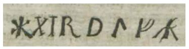
Arnkiel in seiner Heyden-Grabschr. auf der S. 332 und im gleichen Werk vom Gülden-Horn S. 60 berichtet auch darüber, aber dass die ersten beiden Buchstaben bei ihm nicht zusammenhängen, sondern so frei stehen
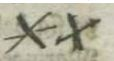
schafft keine Mehrdeutigkeit. Aber dieser Ole Worm in seiner Danicorum Monumentorum Libri Sex, Hafniae, 1643, Buch 5, auf S. 342, hat den zweiten Buchstaben weggelassen, und schreibt:
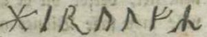
und dieser Pontoppidan in den Schriften der gelehrten Gesellschaft, Band I., S. 62, der letzte Buchstabe schreibt eine Zeile wie diese
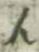
Ich finde dafür keinen anderen Grund, als dass es sich um einen Schreib- oder Druckfehler handeln muss; denn ich behaupte, bei meiner Wiedergabe die größtmögliche Sorgfalt angewandt zu haben. Allerdings war es haarspalterisch, bei diesen Kleinigkeiten zu bleiben. Einhellige Meinung ist jedoch, dass diese Runenbuchstaben nach unserem heutigen Sprachgebrauch das Wort ausdrücken: Hierulsr. Aber was kommt aus diesem Wort? Man sollte fragen die Liebhaber des Alters, besonders bekannte große Männer, sind sich einig, dass dieser Stein eine Stütze des Sieges und der Ehre für eine hohe Person namens Rulf ist. Aber entweder war es Rolf Krake oder Rolf Gange, oder Rolf Hardi ... das alles wird von ihnen, auch von mir, unbestimmt bleiben..."
Nochmals Erik Pontoppidan macht in seinem Werk von 1774 "Den Danske Atlas" - Band VII - Cap. 8, Del 3, S. 240 (S. 12 (e) oben in der pdf-Datei) - Ausführungen zur Existenz des Runensteins "Paa Haberslund Mark staaer den eenesye hidindtil opdagede slesvigske Runesteen, med Ordet Heirolfs, som menes at betyde at en vis Rolf er her slaget. Det berømte Slag ved Immervad har og staaet her i Sognet, som endog gaaer ind i den Haderslevske." - übersetzt: "Auf dem Gebiet Haberslund steht der einzige bisher entdeckte Schleswiger Runenstein, mit dem Wort Hærulf, was vermutlich bedeutet dass hier ein gewisser Rolf geehrt wird. Die berühmte Schlacht von Immervad hat hier in der Gemeinde stattgefunden, vielleicht sogar in Haberslund."
Søren Abildgaard (*18.02.1718 - 02.07.1791, Zeichner, Kupferstecher und Geologe)
 Bildquelle:
Jellingprojektet - Lizenz:
Public Domain -
http://www5.kb.dk/images/billed/2010/okt/billeder/object444188/da/
Bildquelle:
Jellingprojektet - Lizenz:
Public Domain -
http://www5.kb.dk/images/billed/2010/okt/billeder/object444188/da/
hat 1776 diese Zeichnung erstellt - Originalgröße: 24 x 37 cm
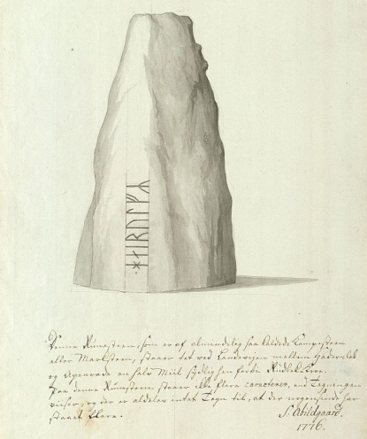
Sein Text darunter: "Denne Runesteen, som er af almindelig saakaldede Kampesteen eller Markstenn, staaer tet ved Landevejen mellem Haderslev og Apenrade en halv Miil sydlig hen forbi Rudbel-Kroe. Paa denne Runesteen staar ikke flere caracterer, end Tegningen viiser, og der er aldeles intet Tegn til, at der nogensinde har staaet flere."
Übersetzung: "Dieser Runenstein, der zu den gewöhnlichen sogenannten Riesensteinen oder Feldsteinen gehört, steht in der Nähe der Straße zwischen Haderslev und Apenrade, eine halbe Meile südlich hinter dem Rudbel Gasthaus. Auf diesem Runenstein gibt es nicht mehr Zeichen, als die Zeichnung zeigt, und es gibt absolut keine Anzeichen dafür, dass es jemals mehr gegeben hat."
Der digitalen Sammlung des Nationalmuseums Kopenhagen entnommen - Lizenz: Public Domain
Søren Abildgaard hat außerdem noch diesen Eintrag in seinem "Dagbog XI" aus den Jahren 1775-76 auf der S. 88 vorgenommen, wobei er die Lage des Runensteins, seine Inschrift und die Maßangaben wiedergibt:
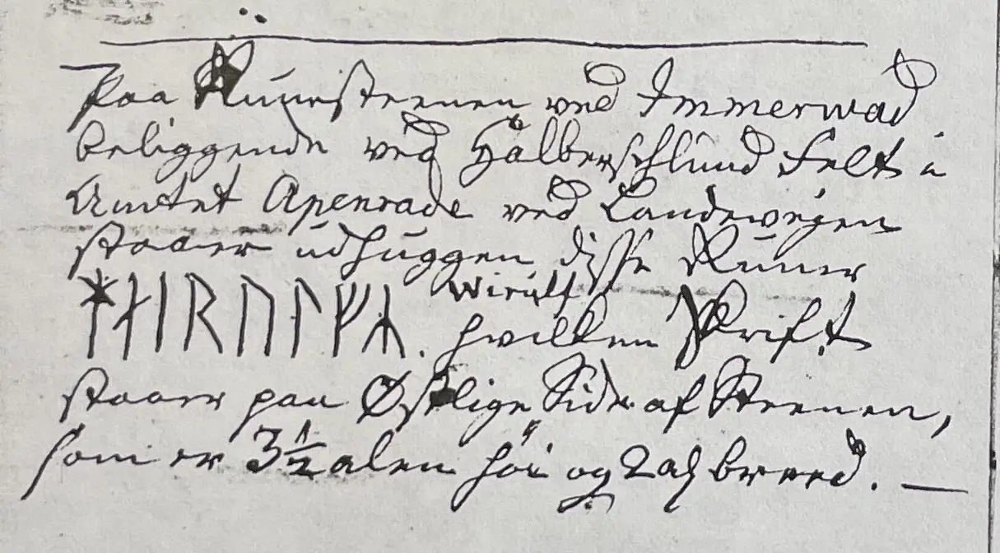

Seine Tagebücher befinden sich heute im Antiqvarisk-Topografisk Arkiv in Kopenhagen. Dies ist die Fotografie einer Kopie, die auch dort vorgehalten wird und die ich dort am 28.09.2022 fertigen durfte.
Von Martin Friedrich Arendt (* 22. Februar 1773 in Altona; April 1823 in der Nähe von Venedig/Italien war ein deutscher Botaniker und Altertumsforscher)
 Bildquelle: Eigenes Foto aus seiner Hinterlassenschaft im
Antikvarisk
-Topografisk Arkiv -
Public Domain
Bildquelle: Eigenes Foto aus seiner Hinterlassenschaft im
Antikvarisk
-Topografisk Arkiv -
Public Domain
haben sich im Antikvarisk -Topografisk Arkiv in Kopenhagen zwei Zeichnungen des Runensteins, die er am 28.12.1807 gefertigt hat, erhalten (Auf kleinem, ausgeschnittenem Papier, unterschiedliche Maße, mit Bleistift gezeichnet - außerdem noch eine Skizze des Standortes). Auf e-Mail Anfrage bekam ich sie heute - 22.09.2021 - vom Antiqvarisk-Topografisk Arkiv in digitalisierter Form übermittelt.
Mir wurde dazu mitgeteilt, dass die Zeichnungen aufgrund ihres Alters nach dänischem Recht keinem Urheberrecht mehr unterliegen - Lizenz: Public Domain - Nationalmuseum in Kopenhagen.
Bei meinem Besuch in diesem Archiv am 27.09.2022 durfte ich diese Notizen selbst fotografieren und habe diese heute - 17.10.2022 - stattdessen eingestellt.
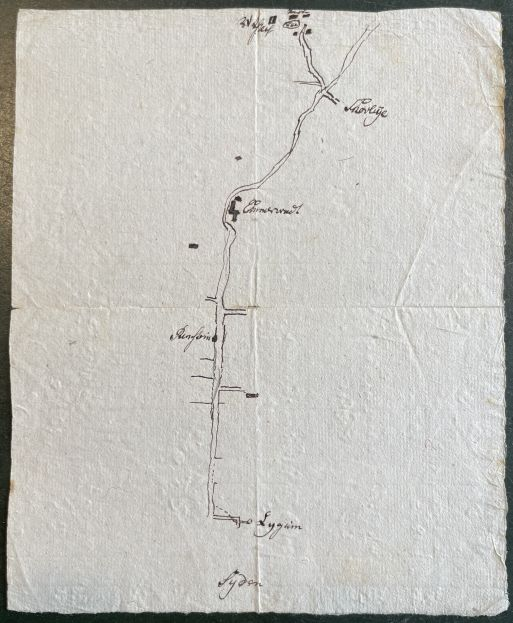
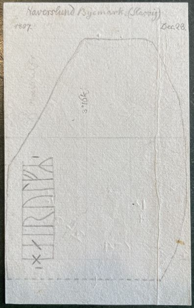
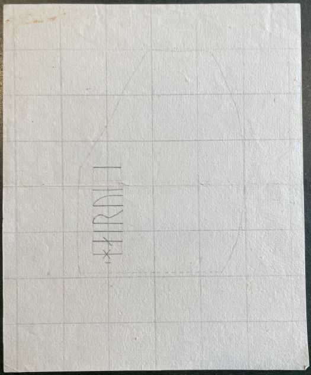
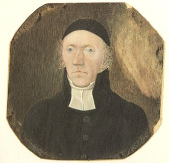
Bildquelle: Pastor Peter Kier - gemalt vom Sohn Hans Andreas Kier - Atlas over Øster Løgum sogn, von Tage Morsing, 1987, S. 7 - Lizenz: CC-BY-SA
Vom o.a. Pastor und Heimatforscher Peter Kier
(*23.12.1771 in
Hovslund -
12.01.1834,
Pastor in der Kirche von
Øster Løgum von 1802
bis zu seinem Tod -
Bildnis seines Grabsteins
auf dem Friedhof
Øster Løgum
-
link-LIVES) stammt der Aufsatz "
Angeheftet ist dem Artikel auch eine Karte, die jedoch unvollständig eingescannt wurde. Über die Webseite der Königlichen Bibliothek zu Kopenhagen findet sich diese Karte aber komplett - "Kort over Øster Løgum Sogn". Dort war sie aber fälschlich mit 1850-1880 datiert, was dann auf meinen Hinweis hin auf 1812 korrigiert wurde.
Der Eintrag "runesteen" in der unten eingestellten Karte wurde von mir rot umrandet.
Die Karte unterliegt keinem Urheberrecht - Lizenz: Public Domain
Finnur Magnusson (dänisch auch Finn Magnusen; * 27. August 1781 in Skálholt/Island; 24. Dezember 1847 in Kopenhagen, isländischer Philologe und Archivar - link-LIVES)
 Bildquelle:
Wikimedia - Lizenz:
Public Domain
Bildquelle:
Wikimedia - Lizenz:
Public Domain
macht in seinem Buch von 1841 "Runamo og Runerne" auf der S. 473 diese Ausführungen:
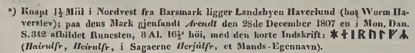
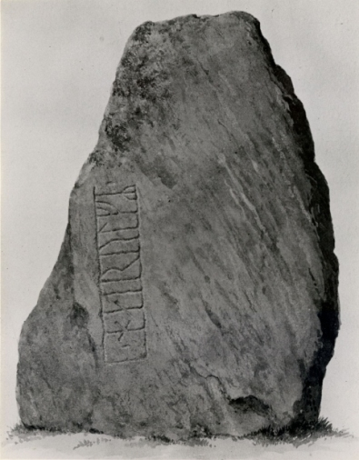
Hier eine Zeichnung von 1858 von Heinrich Hansen (*23.11.1821 - 11.07.1890, Architekturmaler - link-LIVES)
 Bildquelle: Fotografie aus dem Jahr 1883 von
Fotograf Vilhelm Tillge
(8.4.1843-9.4.1896) -
Det Kgl. Biblioteks billedsamling - Lizenz:
Public Domain
Bildquelle: Fotografie aus dem Jahr 1883 von
Fotograf Vilhelm Tillge
(8.4.1843-9.4.1896) -
Det Kgl. Biblioteks billedsamling - Lizenz:
Public Domain
Zeichnung der digitalen Sammlung des Nationalmuseums Kopenhagen entnommen - Lizenz: Public Domain
Am Anfang des vorigen Jahrhunderts fand der Stein Erwähnung, als er innerhalb eines Erdwalls stand. Der Sage nach wurde der Wall nach Errichtung des Steins angelegt. 1854 wurde er auf ein kleines Rasenstück in der Nähe umgesetzt. Gleichzeitig wurde die nun gefriedete Anlage an den König als dessen persönliches Eigentum übergeben. Hier stand er bis zum Waffenstillstand nach dem deutsch-dänischen Krieg von 1864. Dann wurde er im Auftrag des deutschen Prinzen Friedrich Carl Nikolaus von Preußen (*20.03.1828 - 15.06.1885)
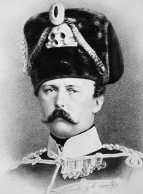
Bildquelle: Wikimedia - Lizenz: Public Domainnach Potsdam zum Jagdschloss Dreilinden als Souvenir überführt (Das Schloss wurde 1869 erbaut und 1954 wegen Baufälligkeit durch das Bezirksamt Zehlendorf abgerissen). Die Order erging wohl am 06. Juli 1864. Der Prinz war der Oberbefehlshaber des aliierten preußischen und österreichischen Heeres. Hier noch ein Link zum Journal für Wannsee und Umgebung, Ausgabe 1 in 2013, mit einem Beitrag "Das Schloss im Wald, Erinnerung an das Jagdschloss Dreilinden".
1864 - Bemerkenswerterweise ist der Runenstein genau im selben Jahr von Prof. P. G. Thorsen (*07.08.1811 - 06.05.1883, Bibliothekar, Runenforscher und Historiker - link-LIVES)
Bildquelle: Fotografie zw. 1863-1900 von
Fotograf Budtz Müller (*26.12.1837 -
30.12.1884) -
Det Kgl. Biblioteks billedsamling - Lizenz:
Public Domain
in dessen Werk De danske Runemindesmærker, forklarede af P.G. Thorsen Første Afdeling - Runemindesmærker i Slesvig S. 3-38) publiziert worden. P. G. Thorsens Vorwort datierte vom 09. März 1864. Zu diesem Zeitpunkt stand der Stein also noch an Ort und Stelle. Nur wenige Monate nach P. G. Thorsens Veröffentlichung dürfte Friedrich Carl Nikolaus von Preußen besagten Runenstein mitgenommen haben. Leider sind die genauen Umstände seines Abtransportes sowie die seiner Ankunft in , bzw. in Jagdschloss Dreilinden bisher noch nicht völlig geklärt. Auf S. 5 in dem Werk von P. G. Thorsen findet sich diese Zeichnung von Heinrich Hansen (*23.11.1821 - 10.07.1890, Architekturmaler) - siehe oben.
In P. G. Thorsens Nachlass findet sich in der Königlichen Bibliothek unter NKS 3296 kvart in der Pappschachtel mit der Nummer 17 auch noch eine Zeichnung von Prof. Julius Magnus Petersen (*04.09.1827 - 31.01.1917, Archäologischer Zeichner und Restaurator - link-LIVES).


Bildquelle: Fotografie von 1903 von Fotograf Marius Christensen (*24.6.1874 - 25.6.1907) - Det Kgl. Biblioteks billedsamling - Lizenz: Public Domain / Visitenkarte - eigenes Foto in Königlichen Bibliothek
Seine Signatur "J Magn. P" hat er am rechten unteren Ende hinterlassen,
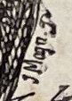
aber ein Datum fand ich nicht. In Lis Jacobsen/Erik Moltke - Danmarks Runeindskrifter - 1942 findet sich dazu komischerweise auch kein Eintrag. Es ist aber meines Erachtens zweifelsfrei die Zeichnung die P. G. Thorsen in seinem Buch Runemindesmærkerne i Slesvig, 1864 auf der Seite 5 zeigt. Darüber ergibt sich dann wohl auch eine Datierung um das Jahr 1864.

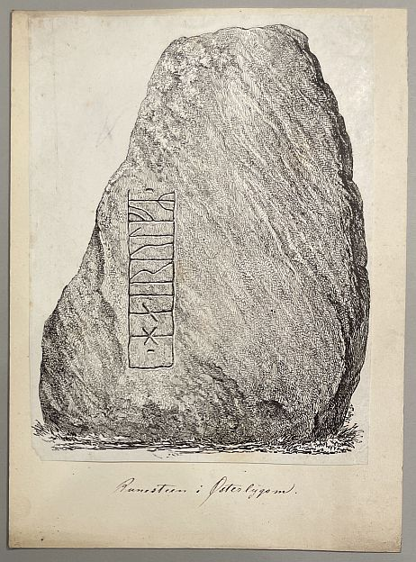
Jagdschloss Dreilinden mit dem Runenstein um 1880
Lizenz: Public Domain
1880 geriet der Runenstein in das Blickfeld deutscher Prähistoriker. Ernst Friedel (*23.06.1837 - 10.03.1918),
Bildquelle: Wikimedia - Lizenz: Public Domain
damals Direktor des 1874 gegründeten Märkischen Provinzialmuseums in Berlin, war es, der den Stein am 4. September 1880 publizierte:
Die Einladung zur Beschickung der Ausstellung anthropologischer und vorgeschichtlicher Funde in Deutschland in Berlin während des Augusts 1880 und die besondere Bitte, alle in Deutschland befindlichen Runendenkmäler während dieser Zeit anzugeben und in Natur oder wenigstens in Abbildungen zugänglich zu machen, veranlasste mich, auch den im Besitz Seiner Königlichen Hoheit des Prinzen Friedrich Carl Nikolaus von Preußen zu Jagdschloss Dreilinden befindlichen Runenstein aufmerksam zu machen. Der Runenstein ist ein nordisches Geschiebe, wahrscheinlich schwedischen Ursprungs, anscheinend aus hartem quarzreichen Granit, über der Erde 150 cm hoch, in der Erde ca. 50 cm tief, im Ganzen also etwa 200 cm in der Längsachse messend. Die größte Breite beträgt ca. 125 cm, der größte Umfang ca. 270 cm. Vorn ist der Stein etwas bauchig und kaum (höchstens ein wenig an der Stelle, wo sich die Runeninschrift befindet) von Menschenhand geglättet. Die Hinterseite dagegen, welche dem Jagdschloss zugewandt ist, scheint künstlich abgespalten und dadurch etwas plan gemacht (...) Der Stein von Dreilinden erinnert an die heidnischen Bautasteine und mag entweder ein wirkliches Grab geschmückt oder ein bloßes Erinnerungszeichen gewesen sein, das seinem ganzen Äußeren, insbesondere der rohen Beschaffenheit des Blockes nach, noch der letzten vorchristlichen Zeit angehört.
Für längere Zeit erlosch dann das Interesse an diesem archäologischen Denkmal. Erst ab 1930 begann man sich erneut für den Stein zu interessieren. So heißt es z.B. in einem Schreiben des Leiters der vorgeschichtlichen Abteilung des Berliner Märkischen Museums, Otto Friedrich Gandert , an den damaligen Provinzialkonservator der Reichshauptstadt Walter Peschke (*04.07.1892 05.01.1952, Diplom-Ingenieur)
Bildquelle: Wikimedia - Lizenz: Public Domain
vom 04. Februar 1942: Der Stein stand vor dem Feldzug von 1864 auf der Gemarkung . Das Gebiet ist dänisch seit 1918. Wie mir ein Kieler Kollege, Prof. Gustav Schwantes (*18.09.1891 - 17.11.1960)
Bildquelle: Wikimedia - Lizenz: Public Domain
einmal mitteilte, ist die Überführung des Steins nach Berlin von den Dänen als eine Beeinträchtigung ihrer nationalen Gefühle aufgefasst worden. Auch jetzt gilt dieser Stein gewissermaßen als kleines nationales Heiligtum. Ich könnte mir vorstellen, daß es in Dänemark sehr freudig begrüßt würde, wenn der Oberbürgermeister der Reichshauptstadt bei irgendeiner Gelegenheit diesen Stein geschenkweise zurückgäbe.
Doch bis zur Rückgabe des Runensteins an Dänemark sollten noch fast zehn Jahre vergehen. Am Donnerstag, 11. Oktober 1951, meldet die Berliner Zeitung »Der Tagesspiegel«:
"Bei einem Empfang in der dänischen Militärmission in Berlin übergab gestern Bürgermeister Ernst Reuter (*29.07.1889 - 29.09.1953)
Bildquelle: Wikimedia - Lizenz: Public Domain
dem dänischen Botschafter, Generalmajor Frants Hvass (*29.04.1896 - 21.12.1982), einen Runenstein, der bisher im Park von Dreilinden lag. Er wurde am alten , dem ehemaligen Nord-Süd-Weg der Viehtreiber, gefunden. Die Inschrift lautet »hairulf-R« (Heerwolf), es steht nicht fest, ob es sich dabei um den Namen eines gefallenen Wikingers oder um den Namen des Runenmeisters handelt. Prinz Friedrich K ließ den Stein 1864 nach bringen. Bürgermeister Reuter sagte, der Beschluss des Senats, den Runenstein zurückzugeben, sei eine kleine Geste der Freundschaft und Verständigung. Sie solle beweisen, daß Berlin mit Dänemark und mit allen anderen Völkern in Freundschaft leben wolle. Der Botschafter antwortete, ganz Dänemark freue sich über die Rückgabe, die ein Beweis des guten Willens zu herzlichen, nachbarlichen Beziehungen sei.
Dazu wurde ein sw Foto des liegenden Runensteins mit dem Bürgermeister Reuter, dem dänischen Botschafter Generalmajor Hvass und General Mathewson abgebildet, die im Gespräch über die Bedeutung der Inschrift sind.
Der besagte Artikel wurde mir am 12.09.2022 auf meine tags zuvor erfolgte E-Mail Anfrage hin von der Zeitung "Der Tagespiegel" als pdf-Datei zur Verfügung gestellt (Leider wurde die Veröffentlichung nicht erlaubt - sehr schade!) - Trotzdem D A N K E !
Prof. Ludv. F. A. Wimmer (*07.02.1839 - 29.04.1920, Philologe und Runenforscher - link-LIVES - Politiets registerblade - Bestattungsprotokoll)
Bildquelle:
Fotografie zw. 1877-1900 von Fotograf Hansen & Weller
-
Det Kgl. Biblioteks billedsamling - Lizenz:
Public Domain
berichtet in seinem Werk "De danske runemindesmærker undersøgte og tolkede af Ludv. F. A. Wimmer, Andet Bind, Runestenene i Jylland og på øerne. 1899-1901, Teil B Sønderjylland, Nr. 1, S. 307-314" über den Runenstein. Dazu veröffentlichte er diese Zeichnung von Magnus Petersen (*04.09.1827 - 01.02.1917, Archäologischer Zeichner und Restaurator) - eigener Scan. Ludv. F. A. Wimmer untersuchte den Runenstein zweimal beim Jagdschloss Dreilinden - am 16.08.1895 und nochmals am 27.05.1899. An seinem ursprünglichen (und heutigen) Standort hatte er ihn bereits 1852 besichtigt.
Ludv. F. A. Wimmer hat seine jahrelangen Aufzeichnungen der
"Kgl.
Bibliotek" in
Kopenhagen
überlassen. Ein
Verzeichnis darüber wurde 1915 in Buchform herausgegeben -
In seinen Unterlagen in der Königlichen Bibliothek befinden sich unter "III - Originaltegninger af de danske Runemindesmærker, udførte paa Undersøgelsesrejserne af Magn. Petersen og kontrollerede paa Stedet af Ludv. Wimmer, samt Prøvetryk af de paa Grundlag af de nævnte Tegninger, Aftryk o. s. v. til De danske Runemindesmærker" udførte Afbildninger med Wimmers Rettelser" zu dem Runenstein von Hovslund unter der Nr. 79 diese beiden handschriftlichen Aufzeichnungen von 1896, die ich am 27.09.2022 fotografieren durfte.


Jagdschloss Dreilinden mit dem Runenstein um 1900
Lizenz: Public Domain
aus:
Foto vom 29.12.1931 von Erik Moltke (*04.04.1901 - 19.10.1984, Runologe, Historiker - link-LIVES)
 Bildquelle: Scan von Buchumschlag "Runerne i Danmark og ders
oprindelse" - Erik Moltke - 1976 - Lizenz:
CC-BY-SA
Bildquelle: Scan von Buchumschlag "Runerne i Danmark og ders
oprindelse" - Erik Moltke - 1976 - Lizenz:
CC-BY-SA
Der digitalen Sammlung des Nationalmuseums Kopenhagen entnommen - Lizenz: CC-BY-SA
Von wann genau diese Ansichtskarte aus meiner Sammlung stammt, ist mir nicht bekannt, dürfte aber auch aus den 1930er-Jahren sein. Der Fotograf ist mir unbekannt.
Foto von Kirsten Klein aus den 1990er Jahren - Der digitalen Sammlung des Nationalmuseums Kopenhagen entnommen.
Lizenz: CC-BY-NC-ND
Im Vorfeld zu dem 2016 erschienenen Buch von Lisbeth M. Imer (*1973, Runologin am Nationalmuseum Kopenhagen) "Danmarks Runesten - en fortælling" (Einband und Inhaltsverzeichnis) reiste sie mit dem Fotografen Roberto Fortuna zur Bestandsaufnahme durch die Lande. Dieser hat die Runensteine mit Schräglicht aufgenommen und darüber wirklich herausragende Fotos erzielt. Dieses Foto entstand am 05.03.2012.
Der digitalen Sammlung des Nationalmuseums Kopenhagen entnommen - Lizenz: CC-BY-SA
Bei meinem Besuch am 14.08.2009 habe ich diese Fotos aufgenommen:
Im Rahmen meiner 2022er Wikingertour war ich am Montag, 30.05.2022, vor Ort. Dieses Jahr habe ich mich auf Jütland (mit Hjarnø und Samsø) beschränkt. Von daher war dieser Runenstein das erste Objekt auf meiner Liste und damit mein Einstieg in die anstehende knapp 3 ½-wöchige Jütland WIKINGER TOUR.
Mehrere Wegweiser / Hinweisschilder sind zu dem Runenstein aufgestellt.


Ein interessante Homepage zu diesem Runenstein mit dem Titel "En runesten på rejse" des Museums Sønderjylland in Haderslev gab es - jetzt findet sich die (leider) nur noch als "App" hier (Auf der Startseite unten auf "Artikler" gehen und dann im Eingabefeld "Filter" das Wort "runesten" eingeben. Darüber kommt man an den Artikel. Der Zugriff funktioniert bei mir nicht via Firefox - da sind etliche Fotos hinterlegt, ich komm aber nur an eins dran. Hab mit dem Entwickler schon gemailt - Problem läg an meinem Rechner. Häh???
Darauf fand sich auch dieses Foto vom 12.11.1951 bei der Feierlichkeit anlässlich seiner Wiedererichtung am ursprünglichen Standort von Senius Tidemann aufgenommen.

Außerdem ein sicherlich ganz besonderes Dokument, nämlich der Frachtbrief für eine Internationale Eisenbahnbeförderung des United States Army Transportation Corp mit der Nr. 010090 vom 24. Oktober 1951 mit der deutschen / dänischen Bahn für einen "Danish Runic Stone" mit einem Gewicht von 4000 kg! Den dortigen Infos zufolge hat der Transport von Berlin nach Hovslund damals immerhin 462,40 DM gekostet!

In dem Artikel "Tiedemann, Senius - Hærulfstenen kom hjem for 30 år siden, S. 321-323, Sønderjysk månedsskrift, Nov./Dec. 1981" findet sich dieses sw-Foto vom Rücktransport von von 1951. Offenbar wurde der Runenstein in seiner Transportverpackung gerade vom Zug auf einen LKW umgeladen.
Den Eintrag zu diesem Runenstein aus der dänischen Runen Datenbank im Internet kann man hier abrufen.
Die Informationen in "Fund og Fortidsminder" zu dem Runenstein finden sich hier. Darin ist inzwischen dieser Zustandsbericht des Steinrestaurators Leif Vognsen aus dem Jahr 2018 eingebettet.
Infos zu dem Runenstein über das Forschungsprojekt "Runes" der Akademie der Wissenschaften zu Göttingen.
Literaturhinweise:
Raben, Jens - Runestenen ved Hovslund, S. 113-15, Sønderjysk månedsskrift 1945
Tiedemann, Senius - Hærulfstenen kom hjem for 30 år siden, S. 321-323, Sønderjysk månedsskrift, Nov./Dec. 1981
Auf dem Titelblatt der Zeitschrift Slesvigland - 13. Jahrgang 1992" - zweisprachige Zeitschrift für Kultur und Geschichte des deutsch-dänischen Grenzgebietes, die in den Jahren 1980 bis 2010 erschien (Format 16,8 x 22,9 cm) - prangt der Hovslund Runenstein. Zwei Artikel "Souvenirs aus dem Grenzland, S. 3-4" und "Die dänischen Souveniers des Prinzen Friedrich Carl Nikolaus von Preußen, S. 5-11", beschäftigten sich u.a. auch mit dem Runenstein.